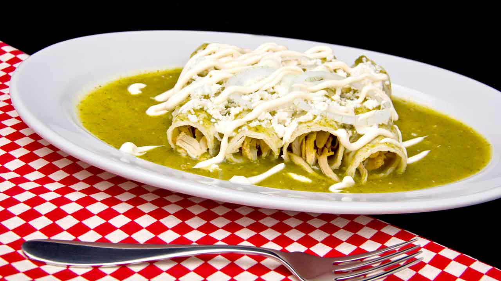

Enchiladas Verdes

An amazing portion of enchiladas verdes
These enchiladas verdes are filled with chicken and cheese and have a nice bite, thanks to a creamy homemade salsa verde.
They are equally delicious whether you make them with cooked pork or beef.
Ingredientes
- 2 tablespoons butter
- 2/3 tablespoons butter
- 2 tablespoons all-purpose flour
- 1 1/2 cups chicken broth
- 1 cup chopped green chile peppers
- 1 clove garlic, minced
- 3/4 teaspoon salt
- 1 pinch ground cumin
- 1 cup shredded Monterey Jack cheese
- 12 (8 inch) corn tortillas
- 3 tablespoons canola oil for frying
- 2 cups shredded, cooked chicken breast meat
Steps
- Make the salsa verde
- Preheat the oven to 350 degrees F
- Heat 1/4 inch oil in a heavy skillet over medium heat
- Dip both sides of each tortilla in salsa verde, then place onto a work surface.
- Spoon some salsa verde over enchiladas and pour in heavy cream
- Bake, uncovered, in the preheated oven until sauce is bubbly and cheese is melted, about 20 minutes.